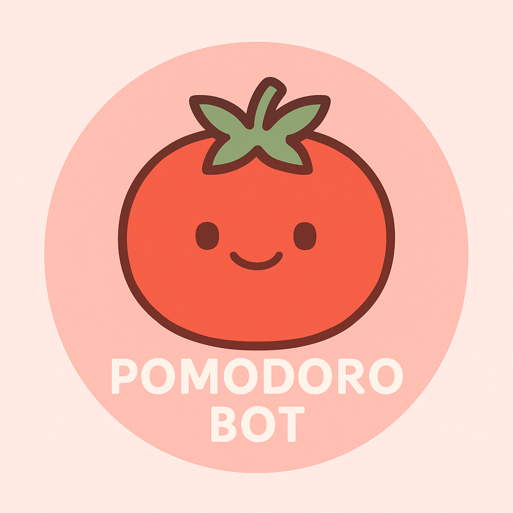

🍓 ポモドーロBot 完全版仕様書 🍓

✨ 機能一覧
- ポモドーロタイマー (Focus / Break / Long Break)
- リアルタイム設定監視（設定変更時は即時反映）
- Focus中のみ参加者をミュート & YouTube BGM再生
- Break中にミュート解除 & BGM停止
- 設定保存と自動読み込み（再起動不要）
- YouTubeの再生リスト対応 & リピート再生
- DL失敗・エラー時は自動スキップ（安定動作）
- DL完了前に即VC入室、DL後即再生
🌸 コマンド一覧
!start：VCに即入室し、ポモドーロ開始!stop：タイマーと音楽停止（VCは維持）!leave：VCから退出し、タイマーを完全停止!status：現在の設定と進行状況を表示!set <項目> <値>：設定変更を即反映
（例）!set focus 25, !set youtube_url URL
💾 保存される設定
focus (Focus時間：分)break (Break時間：分)long_break (Long Break時間：分)cycles (1セット内のサイクル数)youtube_url (BGMのYouTube URL)youtube_enabled (BGM再生のON/OFF)
🌟 動作環境
- Windows 10/11 推奨
- ffmpeg（最新版）を同梱
- yt_dlp でBGMを安定ダウンロード
🐾 補足情報
- 途中参加者も自動でミュートされます。
- 設定変更後、botの再起動は不要です。
- Bot自身はミュートされません。
- エラー発生時は自動で回避します。